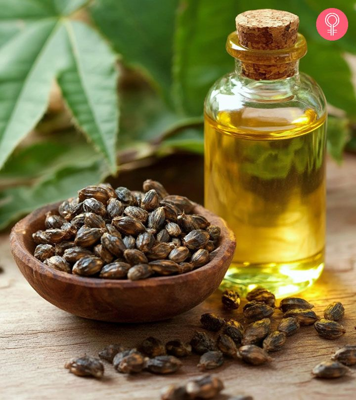

Castor Cultivation Guide

1. Land Preparation
Castor thrives in well-drained loamy or sandy loam soils.
Prepare land with 2–3 plowings and incorporate FYM (5 tons/acre).
Soil pH range: 5.5 – 7.5.
2. Seed Selection & Sowing
Choose high-yield, non-shattering hybrid varieties.
Seed rate: 4–5 kg per acre.
Spacing: 90 x 60 cm (R x P) for better growth and yield.
Sow during Kharif (June–July) or Rabi (October–November) depending on region.
3. Water Management
Requires 4–5 irrigations depending on rainfall.
Critical stages: flowering and seed setting.
Avoid water stagnation; ensure proper drainage.
4. Fertilization Schedule
Basal Dose: Urea (30 kg), DAP (50 kg), MOP (20 kg) per acre.
Apply top dressing of Urea (20 kg) 30 days after sowing.
Micronutrients like zinc and boron improve seed yield.
5. Weed & Pest Management
1st weeding: 20–25 DAS; 2nd weeding: 40–45 DAS.
Pests: Castor semilooper, capsule borer — use recommended insecticides.
Diseases: Leaf blight, wilt — use fungicides as needed.
6. Investment Breakdown (Per Acre)
Input
Estimated Cost (INR)
Seeds
₹600 – ₹1,200
Fertilizers
₹1,500 – ₹2,500
Pesticides
₹800 – ₹1,200
Labor
₹4,000 – ₹6,000
Irrigation
₹1,000 – ₹1,500
Total Investment
₹7,900 – ₹12,400 per acre
7. Harvesting & Yield
Harvest when capsules turn brown and dry.
Thresh carefully to avoid seed damage.
Yield: 6–10 quintals per acre (varies by hybrid and management).
8. Market Rate & Profit Estimation
Average market price: ₹5,500 – ₹7,000 per quintal.
Gross returns: ₹33,000 – ₹70,000 per acre.
Net profit: ₹20,000 – ₹57,000 per acre.